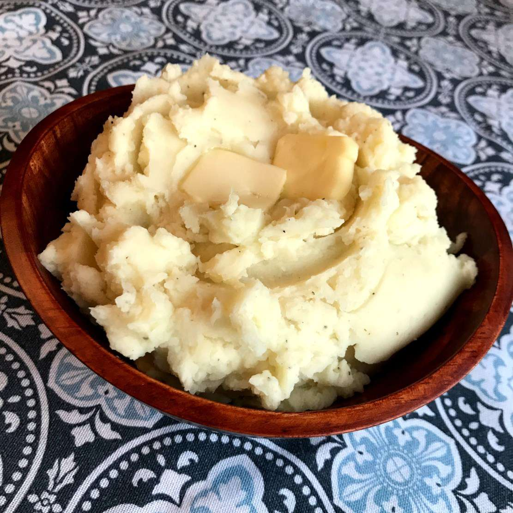

Potato
back to index

So, I made to small batches from this recipe. I divided the recipe in half. The first I made copied the exact recipe. The second one slight mashed the canned yams and added some salt, nutmeg, and cinnamon. I baked it at 400F for 10 min bc the top of the marshmallow was already almost burnt.This mashed potatoes recipe will give you the proper technique to make perfect mashed potatoes every time — buttery, fluffy, and lump-free for the ultimate comfort food!
INGRIDENTS
- 3 large russet potatoes, peeled and cut in half lengthwise
- ½ cup whole milk
- ¼ cup butter
- salt and ground black pepper to taste
DIRECTIONS
- Place potatoes in a large pot and cover with salted water. Bring to a boil. Reduce heat to medium-low, cover, and simmer until tender, 20 to 25 minutes.
- Drain potatoes, then return to the pot. Turn heat to high and allow potatoes to dry for about 30 seconds. Turn off heat.
- Mash potatoes with a potato masher twice around the pot, then add milk and butter. Continue to mash until smooth and fluffy. Whisk in salt and black pepper until evenly distributed, about 15 seconds.